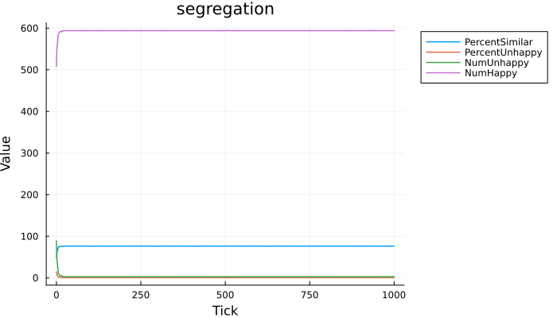
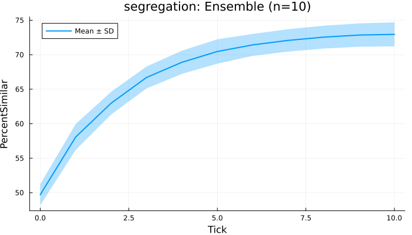
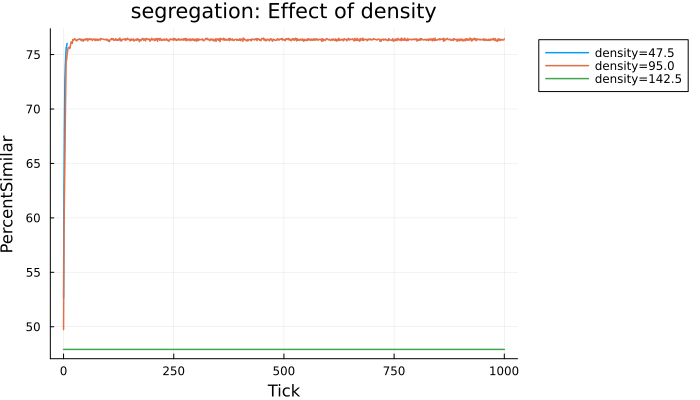

Segregation
Overview
WHAT IS IT?
This project models the behavior of two types of agents in a neighborhood. The orange agents and blue agents get along with one another. But each agent wants to make sure that it lives near some of “its own.” That is, each orange agent wants to live near at least some orange agents, and each blue agent wants to live near at least some blue agents. The simulation shows how these individual preferences ripple through the neighborhood, leading to large-scale patterns.
This project was inspired by Thomas Schelling’s writings about social systems (such as housing patterns in cities).
THINGS TO NOTICE
When you execute SETUP, the orange and blue agents are randomly distributed throughout the neighborhood. But many agents are “unhappy” since they don’t have enough same-color neighbors. The unhappy agents move to new locations in the vicinity. But in the new locations, they might tip the balance of the local population, prompting other agents to leave. If a few agents move into an area, the local blue agents might leave. But when the blue agents move to a new area, they might prompt orange agents to leave that area.
Over time, the number of unhappy agents decreases. But the neighborhood becomes more segregated, with clusters of orange agents and clusters of blue agents.
In the case where each agent wants at least 30% same-color neighbors, the agents end up with (on average) 70% same-color neighbors. So relatively small individual preferences can lead to significant overall segregation.
THINGS TO TRY
Try different values for %-SIMILAR-WANTED. How does the overall degree of segregation change?
If each agent wants at least 40% same-color neighbors, what percentage (on average) do they end up with?
Try different values of DENSITY. How does the initial occupancy density affect the percentage of unhappy agents? How does it affect the time it takes for the model to finish?
Can you set sliders so that the model never finishes running, and agents keep looking for new locations?
EXTENDING THE MODEL
The find-new-spot procedure has the agents move locally till they find a spot. Can you rewrite this procedure so the agents move directly to an appropriate new spot?
Incorporate social networks into this model. For instance, have unhappy agents decide on a new location based on information about what a neighborhood is like from other agents in their network.
Change the rules for agent happiness. One idea: suppose that the agents need some minimum threshold of “good neighbors” to be happy with their location. Suppose further that they don’t always know if someone makes a good neighbor. When they do, they use that information. When they don’t, they use color as a proxy – i.e., they assume that agents of the same color make good neighbors.
The two different visualizations emphasize different aspects of the model. The SQUARE-X visualization shows whether an agent is happy or not. Can you design a different visualization that emphasizes different aspects?
NETLOGO FEATURES
sprout is used to create agents while ensuring no patch has more than one agent on it.
When an agent moves, move-to is used to move the agent to the center of the patch it eventually finds.
Note two different methods that can be used for find-new-spot, one of them (the one we use) is recursive.
CREDITS AND REFERENCES
Schelling, T. (1978). Micromotives and Macrobehavior. New York: Norton.
See also: Rauch, J. (2002). Seeing Around Corners; The Atlantic Monthly; April 2002;Volume 289, No. 4; 35-48. https://www.theatlantic.com/magazine/archive/2002/04/seeing-around-corners/302471/
HOW TO CITE
If you mention this model or the NetLogo software in a publication, we ask that you include the citations below.
For the model itself:
- Wilensky, U. (1997). NetLogo Segregation model. http://ccl.northwestern.edu/netlogo/models/Segregation. Center for Connected Learning and Computer-Based Modeling, Northwestern University, Evanston, IL.
Please cite the NetLogo software as:
- Wilensky, U. (1999). NetLogo. http://ccl.northwestern.edu/netlogo/. Center for Connected Learning and Computer-Based Modeling, Northwestern University, Evanston, IL.
COPYRIGHT AND LICENSE
Copyright 1997 Uri Wilensky.

This model is licensed under the Creative Commons Attribution-NonCommercial-ShareAlike 3.0 License. To view a copy of this license, visit https://creativecommons.org/licenses/by-nc-sa/3.0/ or send a letter to Creative Commons, 559 Nathan Abbott Way, Stanford, California 94305, USA.
NetLogo itself is free software for non-commercial use under the terms of the GNU General Public License (see full license information here).
To inquire about commercial licenses for either NetLogo or specific models from the models library, please contact netlogo-commercial-admin@ccl.northwestern.edu.
This model was created as part of the project: CONNECTED MATHEMATICS: MAKING SENSE OF COMPLEX PHENOMENA THROUGH BUILDING OBJECT-BASED PARALLEL MODELS (OBPML). The project gratefully acknowledges the support of the National Science Foundation (Applications of Advanced Technologies Program) – grant numbers RED #9552950 and REC #9632612.
This model was converted to NetLogo as part of the projects: PARTICIPATORY SIMULATIONS: NETWORK-BASED DESIGN FOR SYSTEMS LEARNING IN CLASSROOMS and/or INTEGRATED SIMULATION AND MODELING ENVIRONMENT. The project gratefully acknowledges the support of the National Science Foundation (REPP & ROLE programs) – grant numbers REC #9814682 and REC-0126227. Converted from StarLogoT to NetLogo, 2001.
Parameters
| Parameter | Type | Default | Description |
|---|---|---|---|
density | Float64 | 95.0 | percent of patches occupied |
pct_similar_wanted | Float64 | 30.0 | pct similar wanted |
grid_width | Int | 25 | -12..12 = 25 patches |
grid_height | Int | 25 | grid height |
max_ticks | Int | 1000 | max ticks |
Source Code
The Julia code to run this model:
using ArkModelZoo
_, trajectory = run_segregation()Time Series

Ensemble Runs
Ten replicates with different random seeds, showing mean ± standard deviation.

Parameter Sensitivity
Varying density.

Appendix: Source Code
This model is implemented in the Ark.jl Entity-Component-System (ECS) framework. The code is split into five files, each with a distinct role:
- Parameters: a mutable struct holding all configurable values.
- Components: lightweight data types attached to individual entities (agents).
- Resources: world-level shared state accessible to all systems.
- Systems: functions that operate on entities each tick, defining model behavior.
- Model: wiring that assembles the world, registers resources and systems, and provides the run entry point.
Parameters (parameters.jl)
The parameter struct uses @kwdef so that every field has a default value and can be overridden by keyword. These defaults match the original NetLogo model’s slider settings.
Base.@kwdef mutable struct SegregationParams
density::Float64 = 95.0 # percent of patches occupied
pct_similar_wanted::Float64 = 30.0
grid_width::Int = 25 # -12..12 = 25 patches
grid_height::Int = 25
max_ticks::Int = 1000
seed::Int = 42
endComponents (components.jl)
Components are lightweight data types attached to individual entities (agents). Mutable structs hold per-entity state, while empty tag structs act as markers for the ECS query system to efficiently filter entities.
# Grid position component
mutable struct GridPosition
x::Int
y::Int
end
GridPosition() = GridPosition(0, 0)
# Agent color: true = red, false = green
mutable struct AgentColor
red::Bool
end
AgentColor() = AgentColor(true)
# Happiness state (computed each tick)
mutable struct Happiness
similar_nearby::Int
other_nearby::Int
total_nearby::Int
happy::Bool
end
Happiness() = Happiness(0, 0, 0, false)Resources (resources.jl)
Resources are world-level singletons shared across all systems, used for global state and aggregate statistics.
mutable struct SegregationGrid
width::Int
height::Int
cells::Matrix{Entity}
end
function SegregationGrid(width::Int, height::Int)
SegregationGrid(width, height, fill(zero_entity, width, height))
end
function is_empty(grid::SegregationGrid, x::Int, y::Int)
return is_zero(grid.cells[x, y])
end
function set_cell!(grid::SegregationGrid, x::Int, y::Int, eid::Entity)
grid.cells[x, y] = eid
end
function clear_cell!(grid::SegregationGrid, x::Int, y::Int)
grid.cells[x, y] = zero_entity
end
mutable struct SegregationStats
percent_similar::Float64
percent_unhappy::Float64
num_unhappy::Int
num_happy::Int
end
SegregationStats() = SegregationStats(0.0, 0.0, 0, 0)Systems (systems.jl)
Systems contain the model logic and execute in a defined order each tick. Each system struct implements either initialize! (run once at setup) or update! (run every tick).
# --- Initialization ---
struct InitSegregationSystem <: System end
function initialize!(::InitSegregationSystem, world::World)
params = get_resource(world, SegregationParams)
rng = get_resource(world, RNGResource).rng
grid = get_resource(world, SegregationGrid)
# Density-based initialization: each patch has density% chance of an agent
# Color is random per agent (one-of [red green]), matching NetLogo one-of [105 27]
for x in 1:grid.width, y in 1:grid.height
if rand(rng, 0:99) < round(Int, params.density)
is_red = rand(rng, Bool)
eid = new_entity!(world, (
GridPosition(x, y),
AgentColor(is_red),
Happiness(),
))
set_cell!(grid, x, y, eid)
end
end
# Match NetLogo setup: compute initial happiness + stats (update-turtles; update-globals)
update!(UpdateHappinessSystem(), world)
return nothing
end
# --- Update Happiness ---
struct UpdateHappinessSystem <: System end
function update!(::UpdateHappinessSystem, world::World)
params = get_resource(world, SegregationParams)
grid = get_resource(world, SegregationGrid)
stats = get_resource(world, SegregationStats)
total_similar = 0
total_neighbors = 0
num_unhappy = 0
num_happy = 0
for (_, positions, colors, happinesses) in Query(world, (GridPosition, AgentColor, Happiness))
@inbounds for i in eachindex(positions)
pos = positions[i]
color = colors[i]
h = happinesses[i]
similar = 0
other = 0
# Check Moore neighborhood (8 surrounding cells)
for dx in -1:1, dy in -1:1
(dx == 0 && dy == 0) && continue
nx = pos.x + dx
ny = pos.y + dy
# Wrap around (toroidal)
nx = mod1(nx, grid.width)
ny = mod1(ny, grid.height)
neighbor_eid = grid.cells[nx, ny]
is_zero(neighbor_eid) && continue
neighbor_color = get_components(world, neighbor_eid, (AgentColor,))[1]
if neighbor_color.red == color.red
similar += 1
else
other += 1
end
end
total = similar + other
h.similar_nearby = similar
h.other_nearby = other
h.total_nearby = total
h.happy = total == 0 || (similar / total * 100.0 >= params.pct_similar_wanted)
if h.happy
num_happy += 1
else
num_unhappy += 1
end
total_similar += similar
total_neighbors += total
end
end
stats.num_happy = num_happy
stats.num_unhappy = num_unhappy
stats.percent_unhappy = (num_happy + num_unhappy) > 0 ?
num_unhappy / (num_happy + num_unhappy) * 100.0 : 0.0
stats.percent_similar = total_neighbors > 0 ?
total_similar / total_neighbors * 100.0 : 0.0
return nothing
end
# --- Move Unhappy Agents ---
# NetLogo: ask turtles with [not happy?] [find-new-spot]
# find-new-spot: rt random-float 360; fd random-float 10;
# if any? other turtles-here [ find-new-spot ]; move-to patch-here
# Note: recursive — does random walk from current position until empty patch found
struct MoveUnhappySystem <: System end
function update!(::MoveUnhappySystem, world::World)
rng = get_resource(world, RNGResource).rng
grid = get_resource(world, SegregationGrid)
# Collect unhappy agents
unhappy = Tuple{Entity, Int, Int}[]
for (eids, positions, _, happinesses) in Query(world, (GridPosition, AgentColor, Happiness))
@inbounds for i in eachindex(positions)
if !happinesses[i].happy
push!(unhappy, (eids[i], positions[i].x, positions[i].y))
end
end
end
# NetLogo `ask` shuffles agentset each time
Random.shuffle!(rng, unhappy)
# Move each unhappy agent using random walk (matching NetLogo's recursive find-new-spot)
# Clear old cell BEFORE walking so the turtle's spot is available (like NetLogo fd)
for (eid, ox, oy) in unhappy
clear_cell!(grid, ox, oy)
nx, ny = _find_new_spot(rng, ox, oy, grid)
set_cell!(grid, nx, ny, eid)
pos = get_components(world, eid, (GridPosition,))[1]
pos.x = nx
pos.y = ny
end
return nothing
end
function _find_new_spot(rng, x::Int, y::Int, grid::SegregationGrid; max_tries::Int=500)
w, h = grid.width, grid.height
# Start from continuous position at patch center
cx, cy = Float64(x), Float64(y)
heading = 0.0
for _ in 1:max_tries
# NetLogo: rt random-float 360 (relative turn); fd random-float 10
heading += rand(rng) * 360.0
dist = rand(rng) * 10.0
θ = deg2rad(heading)
cx += sin(θ) * dist
cy += cos(θ) * dist
# Snap to nearest patch (toroidal)
gx = mod1(round(Int, cx), w)
gy = mod1(round(Int, cy), h)
if is_zero(grid.cells[gx, gy])
return gx, gy
end
# Continue walk from new continuous position (don't reset to patch center)
end
return x, y # fallback: stay put
end
# --- Termination ---
struct SegregationTerminationSystem <: System end
function update!(::SegregationTerminationSystem, world::World)
stats = get_resource(world, SegregationStats)
params = get_resource(world, SegregationParams)
tick = get_resource(world, Tick)
if stats.num_unhappy == 0 || tick.tick + 1 >= params.max_ticks
get_resource(world, Terminate).stop = true
end
return nothing
endModel (model.jl)
The model file assembles all pieces: it creates the ECS World with the required component types, registers resources, builds the Scheduler with systems in execution order, and exposes the public run entry point. The observer pattern records the trajectory each tick.
function segregation_world(; initial_capacity::Int = 4096)
return World(
GridPosition,
AgentColor,
Happiness;
initial_capacity = initial_capacity,
allow_mutable = true,
)
end
function segregation_systems()
return (
InitSegregationSystem(),
MoveUnhappySystem(), # Move first (using happiness from previous tick)
UpdateHappinessSystem(), # Then recompute happiness after moves
SegregationTerminationSystem(),
)
end
function segregation_model(params::SegregationParams = SegregationParams())
world = segregation_world()
_add_standard_resources!(world, params)
add_resource!(world, SegregationGrid(params.grid_width, params.grid_height))
add_resource!(world, SegregationStats())
scheduler = Scheduler(world, segregation_systems())
initialize!(scheduler)
return scheduler
end
struct SegregationObserver end
function segregation_headers(::SegregationObserver)
return ["PercentSimilar", "PercentUnhappy", "NumUnhappy", "NumHappy"]
end
function segregation_values(::SegregationObserver, world::World)
stats = get_resource(world, SegregationStats)
return Float64[stats.percent_similar, stats.percent_unhappy,
stats.num_unhappy, stats.num_happy]
end
function run_segregation(; params::SegregationParams = SegregationParams(), observe::Bool = true)
return _run_model(segregation_model, SegregationObserver(), segregation_values; params, observe)
end